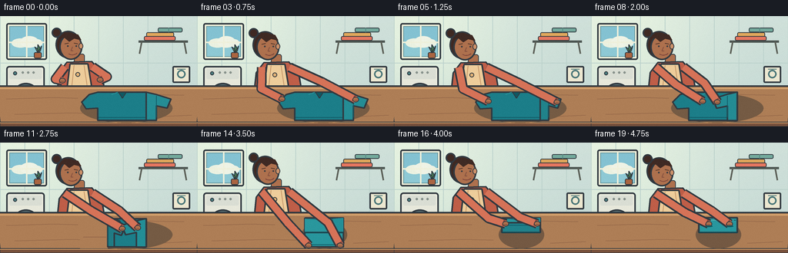
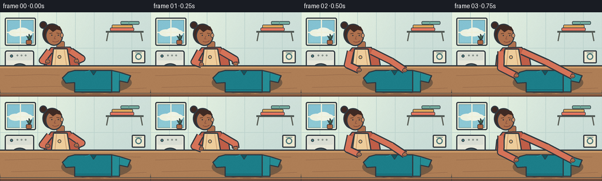

CODING AGENTS AS PIXEL WORLD MODELS
traex/GPT-5.6-Sol · motion_rationality_0037
点击播放 · 原生 RGB 像素
逐轮保存的候选
回放视频、检查图与代码变化。
每份候选均可单独播放。实际图片检查记录在下方工具轨迹中。
候选 01播放与检查图
点击播放 · 原生 RGB 像素


展开代码变化
--- 上一保存版本
+++ 本次保存版本
@@ -0,0 +1,321 @@
+from pathlib import Path
+import math
+import numpy as np
+from PIL import Image, ImageDraw
+import artifact_io
+
+W, H, N = 256, 144, 20
+S = 4
+rng = np.random.default_rng(37)
+
+# Drawing helpers at 4x resolution for smooth silhouettes.
+def C(p):
+ return tuple(int(round(v*S)) for v in p)
+
+def poly(d, pts, fill, outline=None, width=1):
+ q = [C(p) for p in pts]
+ d.polygon(q, fill=fill)
+ if outline:
+ d.line(q + [q[0]], fill=outline, width=width*S, joint='curve')
+
+def ell(d, box, fill, outline=None, width=1):
+ d.ellipse(C(box), fill=fill, outline=outline, width=width*S if outline else 1)
+
+def rect(d, box, fill, outline=None, width=1, radius=0):
+ if radius:
+ d.rounded_rectangle(C(box), radius=radius*S, fill=fill, outline=outline, width=width*S if outline else 1)
+ else:
+ d.rectangle(C(box), fill=fill, outline=outline, width=width*S if outline else 1)
+
+def line(d, pts, fill, width=1, joint='curve'):
+ d.line([C(p) for p in pts], fill=fill, width=width*S, joint=joint)
+
+def bezier(p0,p1,p2,p3,n=20):
+ out=[]
+ for u in np.linspace(0,1,n):
+ v=1-u
+ out.append((v**3*p0[0]+3*v*v*u*p1[0]+3*v*u*u*p2[0]+u**3*p3[0],
+ v**3*p0[1]+3*v*v*u*p1[1]+3*v*u*u*p2[1]+u**3*p3[1]))
+ return out
+
+def smooth(x):
+ x=max(0,min(1,x)); return x*x*(3-2*x)
+
+def phase(t,a,b):
+ return smooth((t-a)/(b-a))
+
+def mix(a,b,p):
+ return a+(b-a)*p
+
+def mixpt(a,b,p):
+ return (mix(a[0],b[0],p),mix(a[1],b[1],p))
+
+INK=(49,57,64)
+SKIN=(174,113,78)
+SKIN_HI=(203,145,106)
+HAIR=(63,42,36)
+SLEEVE=(191,94,72)
+SLEEVE_HI=(214,115,88)
+TEAL=(28,126,137)
+TEAL_LIGHT=(42,151,158)
+TEAL_DARK=(18,93,105)
+
+
+def draw_background(im, d):
+ # Soft cool wall gradient, warm at the window side.
+ arr=np.asarray(im)
+ yy=np.arange(H*S)[:,None]
+ xx=np.arange(W*S)[None,:]
+ glow=np.exp(-((xx-25*S)**2+(yy-25*S)**2)/(2*(90*S)**2))
+ base=np.zeros((H*S,W*S,3),dtype=np.float32)
+ base[:]=np.array([207,224,218],dtype=np.float32)
+ base += glow[...,None]*np.array([24,19,7])
+ base -= (yy/(H*S))[...,None]*np.array([12,8,6])
+ im.paste(Image.fromarray(np.uint8(np.clip(base,0,255))))
+
+ # Fine wall panels.
+ for x in range(0,257,32): line(d,[(x,0),(x,91)],(188,210,204),1)
+ line(d,[(0,61),(256,61)],(188,210,204),1)
+
+ # Window and daylight.
+ rect(d,(8,9,61,57),(239,240,219),INK,2,3)
+ rect(d,(12,13,57,53),(142,201,213),(103,151,158),1)
+ # sky gradient-like bands and soft clouds
+ rect(d,(13,14,56,33),(132,194,210))
+ ell(d,(15,29,38,41),(235,241,225)); ell(d,(26,26,50,41),(239,243,229)); ell(d,(41,30,55,40),(236,242,228))
+ line(d,[(34.5,13),(34.5,53)],(239,240,219),2)
+ line(d,[(12,34),(57,34)],(239,240,219),2)
+ # tiny plant on sill
+ rect(d,(44,47,54,55),(171,101,66),INK,1,2)
+ for pts in [[(49,48),(45,40),(49,43)],[(49,48),(54,39),(52,46)],[(49,47),(49,37),(52,42)]]:
+ poly(d,pts,(72,130,87),INK,1)
+
+ # Washing machine on left, partly behind the person.
+ rect(d,(8,65,58,122),(231,232,219),INK,2,4)
+ rect(d,(12,69,54,82),(218,222,212),None,0,2)
+ ell(d,(16,87,51,120),(87,111,116),INK,2)
+ ell(d,(21,92,46,115),(127,164,166),(235,238,226),2)
+ ell(d,(17,72,22,77),(73,123,125),INK,1)
+ for x in [28,35,42]: ell(d,(x,72,x+3,75),(135,145,139))
+ # subtle swirl behind glass
+ line(d,bezier((26,105),(30,96),(42,99),(42,106)),(193,218,214),2)
+
+ # Wall shelf and folded laundry, reinforcing the activity.
+ line(d,[(180,33),(244,33)],(78,87,83),3)
+ line(d,[(184,33),(181,49)],(91,95,87),2); line(d,[(239,33),(242,49)],(91,95,87),2)
+ rect(d,(190,21,226,27),(224,167,92),INK,1,2)
+ rect(d,(187,26,228,32),(230,119,96),INK,1,2)
+ rect(d,(205,15,237,21),(116,170,157),INK,1,2)
+ line(d,[(219,15),(219,21)],(84,135,126),1)
+ # framed laundry symbol
+ rect(d,(224,65,247,87),(237,232,209),INK,2,2)
+ ell(d,(230,70,241,81),None,(74,118,120),2)
+ line(d,[(230,69),(241,69)],(74,118,120),1)
+
+ # Floor/wall base visible at edges.
+ rect(d,(0,121,256,144),(162,148,122))
+ line(d,[(0,121),(256,121)],(81,80,71),2)
+
+
+def draw_person_base(d, bob, blink):
+ # Rear torso and shoulder silhouette.
+ neck_y=54+bob
+ rect(d,(96,49+bob,110,63+bob),SKIN,INK,1,3)
+ poly(d,[(73,111),(77,73+bob),(87,60+bob),(119,59+bob),(132,74+bob),(138,111)],SLEEVE,INK,2)
+ # apron/front panel makes the person visually distinct from the garment.
+ poly(d,[(91,62+bob),(114,62+bob),(122,111),(85,111)],(238,205,155),INK,2)
+ line(d,[(96,64+bob),(91,111)],(196,151,107),1)
+ line(d,[(109,64+bob),(116,111)],(196,151,107),1)
+ ell(d,(98,73+bob,104,79+bob),(225,178,119),INK,1)
+
+ # Hair mass, bun, face, fringe.
+ ell(d,(72,19+bob,105,55+bob),HAIR,INK,2)
+ ell(d,(67,15+bob,80,28+bob),HAIR,INK,2)
+ ell(d,(77,23+bob,107,57+bob),SKIN,INK,2)
+ # ear and face highlight
+ ell(d,(102,35+bob,108,43+bob),SKIN_HI,INK,1)
+ poly(d,[(77,28+bob),(84,21+bob),(101,24+bob),(105,31+bob),(96,29+bob),(90,33+bob),(84,28+bob)],HAIR,HAIR,1)
+ # eyebrows/eyes looking down
+ line(d,[(84,36+bob),(89,35+bob)],HAIR,1)
+ line(d,[(96,35+bob),(101,36+bob)],HAIR,1)
+ if blink:
+ line(d,[(85,39+bob),(90,40+bob)],INK,1); line(d,[(96,40+bob),(101,40+bob)],INK,1)
+ else:
+ ell(d,(87,38+bob,89,40+bob),INK); ell(d,(98,38+bob,100,40+bob),INK)
+ # nose and focused gentle smile
+ line(d,[(94,40+bob),(92,45+bob),(95,45+bob)],(131,80,63),1)
+ line(d,bezier((89,49+bob),(92,51+bob),(97,51+bob),(100,48+bob),10),(119,64,57),1)
+
+
+def garment_pre_bottom(d, pr, pl):
+ # Soft contact shadow.
+ ell(d,(104,101,224,139),(117,91,68))
+ # Initial/right-fold geometry. Fixed fabric left of x=190.
+ left_base=[(127,99),(190,99),(190,136),(127,136),(127,120),(112,121),(106,112),(116,102)]
+ poly(d,left_base,TEAL,INK,2)
+ # lower hem on fixed portion
+ line(d,[(128,132),(190,132)],TEAL_DARK,1)
+
+ # Right sleeve and side rotates about x=190 (true flip compression at midpoint).
+ c=math.cos(math.pi*pr)
+ right0=[(190,99),(203,102),(222,108),(217,120),(203,117),(203,136),(190,136)]
+ right=[(190+(x-190)*c,y) for x,y in right0]
+ shade=abs(c)
+ rc=(int(mix(18,37,shade)),int(mix(82,141,shade)),int(mix(91,149,shade)))
+ poly(d,right,rc,INK,2)
+ if abs(c)>.17:
+ seam=[(190+(203-190)*c,104),(190+(203-190)*c,132)]
+ line(d,seam,TEAL_DARK,1)
+
+ # Left side starts rotating only after the right fold has settled.
+ if pl>0:
+ # Cover static left segment with table-colored approximation is avoided by redrawing
+ # the center/right garment as the stable under-layer.
+ # A moving left flap overlays and visually dominates its old area.
+ cc=math.cos(math.pi*pl)
+ left0=[(140,99),(127,99),(116,102),(106,112),(112,121),(127,118),(127,136),(140,136)]
+ moving=[(140+(x-140)*cc,y) for x,y in left0]
+ ls=abs(cc)
+ lc=(int(mix(17,43,ls)),int(mix(80,149,ls)),int(mix(91,157,ls)))
+ # mask old wing with tabletop tone when it has begun leaving
+ if pl>.04:
+ poly(d,[(104,98),(140,98),(140,138),(104,138)],(174,126,86),None)
+ # restore grain softly
+ line(d,[(108,123),(138,123)],(151,105,74),1)
+ # stable central stack and already-folded right flap
+ poly(d,[(140,99),(190,99),(190,136),(140,136)],TEAL,INK,2)
+ poly(d,[(190,99),(177,102),(158,108),(163,120),(177,117),(177,136),(190,136)],(35,142,150),INK,2)
+ poly(d,moving,lc,INK,2)
+ line(d,[(140,100),(140,134)],TEAL_DARK,1)
+
+ # Collar and shoulder seam, visible until compacting.
+ if pl < .62:
+ poly(d,[(154,99),(164,99),(159,107)],(16,89,99),INK,1)
+ line(d,[(145,102),(153,99)],TEAL_LIGHT,1)
+
+
+def garment_bottom_fold(d, pb):
+ # Contact shadow narrows as garment is compacted.
+ ell(d,(136,102,195,138),(116,89,67))
+ # Stable upper half of the side-folded shirt.
+ poly(d,[(140,98),(190,98),(190,117),(140,117)],TEAL,INK,2)
+ # side-fold layering
+ poly(d,[(177,99),(190,98),(190,117),(177,117)],(36,143,151),None)
+ poly(d,[(140,99),(158,101),(171,108),(169,117),(140,117)],(42,151,157),None)
+ # Collar peeking from beneath fold.
+ poly(d,[(158,99),(168,99),(163,106)],(15,86,96),INK,1)
+
+ c=math.cos(math.pi*pb)
+ y2=117+(136-117)*c
+ moving=[(140,117),(190,117),(190,y2),(140,y2)]
+ darkness=abs(c)
+ col=(int(mix(19,41,darkness)),int(mix(88,151,darkness)),int(mix(99,158,darkness)))
+ poly(d,moving,col,INK,2)
+ if abs(y2-117)>3:
+ line(d,[(142,y2-3*np.sign(c)),(188,y2-3*np.sign(c))],TEAL_DARK,1)
+ # strong crease at hinge
+ line(d,[(140,117),(190,117)],(14,78,88),1)
+ if pb>.82:
+ # highlight the neat final folded rectangle.
+ line(d,[(144,101),(185,101)],(80,177,177),1)
+
+
+def draw_arm(d, shoulder, elbow, hand, front=True):
+ # Rounded two-part sleeve with a cuff and hand. Joint circles eliminate broken elbows.
+ line(d,[shoulder,elbow,hand],INK,13)
+ line(d,[shoulder,elbow,hand],SLEEVE_HI,9)
+ ell(d,(elbow[0]-4.5,elbow[1]-4.5,elbow[0]+4.5,elbow[1]+4.5),SLEEVE_HI)
+ # cuff perpendicular-ish to forearm
+ vx=hand[0]-elbow[0]; vy=hand[1]-elbow[1]; L=max(1,math.hypot(vx,vy))
+ nx=-vy/L; ny=vx/L
+ cuff=(hand[0]-vx/L*3, hand[1]-vy/L*3)
+ line(d,[(cuff[0]-nx*4,cuff[1]-ny*4),(cuff[0]+nx*4,cuff[1]+ny*4)],(140,67,57),2)
+ ell(d,(hand[0]-4.2,hand[1]-3.5,hand[0]+4.2,hand[1]+3.5),SKIN,INK,1)
+ # two small finger marks aligned with the held fabric
+ line(d,[(hand[0]-2,hand[1]+1),(hand[0]+2,hand[1]+1)],(131,77,59),1)
+
+
+def arm_pose(t):
+ # Anatomically guided poses for each action phase.
+ if t < .20: # both hands reach to the laid-out shirt
+ p=phase(t,0,.20)
+ lh=mixpt((81,84),(114,111),p); le=mixpt((72,82),(85,96),p)
+ rh=mixpt((130,83),(216,112),p); re=mixpt((139,79),(166,87),p)
+ elif t < .43: # right hand carries right panel across; left steadies fabric
+ p=phase(t,.20,.43)
+ lh=mixpt((114,111),(145,111),min(1,p*1.5)); le=mixpt((85,96),(110,89),p)
+ c=math.cos(math.pi*p); rh=(190+(216-190)*c,112); re=mixpt((166,87),(147,87),p)
+ elif t < .66: # left hand folds the remaining wing inward
+ p=phase(t,.43,.66)
+ cc=math.cos(math.pi*p); lh=(140+(110-140)*cc,112); le=mixpt((98,90),(126,88),p)
+ rh=mixpt((166,111),(184,111),p); re=mixpt((147,87),(158,89),p)
+ elif t < .73: # slide both hands down to the hem
+ p=phase(t,.66,.73)
+ lh=mixpt((170,112),(145,134),p); le=mixpt((126,88),(118,105),p)
+ rh=mixpt((184,111),(187,134),p); re=mixpt((158,89),(170,104),p)
+ elif t < .90: # lift and flip the bottom half upward
+ p=phase(t,.73,.90); c=math.cos(math.pi*p)
+ y=117+17*c
+ lh=(145,y); rh=(186,y)
+ le=mixpt((118,105),(124,96),p); re=mixpt((170,104),(160,94),p)
+ else: # pat/smooth, then relax slightly
+ p=phase(t,.90,1.0)
+ pat=math.sin(math.pi*p)
+ lh=(153,106-3*pat); rh=(180,106-2*pat)
+ le=(122,91-2*pat); re=(157,89-2*pat)
+ return lh,le,rh,re
+
+
+def render(i):
+ t=i/(N-1)
+ im=Image.new('RGB',(W*S,H*S))
+ d=ImageDraw.Draw(im)
+ draw_background(im,d)
+ # Table legs behind top.
+ poly(d,[(17,132),(28,132),(26,144),(18,144)],(89,63,48),INK,1)
+ poly(d,[(225,132),(237,132),(239,144),(230,144)],(89,63,48),INK,1)
+ # Person behind work surface.
+ bob=0.7*math.sin(t*math.pi*2) - (1.2 if .73<t<.9 else 0)
+ draw_person_base(d,bob,blink=(i==10))
+ # Table top in warm wood with perspective and grain.
+ poly(d,[(-5,91),(260,91),(256,140),(0,140)],(174,126,86),INK,2)
+ # back rim and layered front edge
+ line(d,[(0,94),(256,94)],(213,163,110),2)
+ for pts in [[(8,108),(70,106),(101,107)],[(19,128),(92,126),(129,127)],[(188,102),(239,103)],[(203,131),(249,129)]]:
+ line(d,pts,(151,105,74),1)
+ poly(d,[(0,138),(256,138),(256,144),(0,144)],(120,81,60),INK,1)
+ line(d,[(0,139),(256,139)],(217,160,104),1)
+
+ pr=phase(t,.20,.43)
+ pl=phase(t,.43,.66)
+ pb=phase(t,.73,.90)
+ if t < .73:
+ garment_pre_bottom(d,pr,pl)
+ else:
+ garment_bottom_fold(d,pb)
+
+ # Arms and hands sit naturally above table and garment.
+ lh,le,rh,re=arm_pose(t)
+ draw_arm(d,(84,66+bob),le,lh)
+ draw_arm(d,(120,66+bob),re,rh)
+
+ # Foreground micro-details: cloth contact shadows beneath palms.
+ if t>.9:
+ ell(d,(148,108,158,110),(17,87,95)); ell(d,(175,108,185,110),(17,87,95))
+
+ # Downsample and add extremely subtle fixed film texture (same coordinates each frame).
+ im=im.resize((W,H),Image.Resampling.LANCZOS)
+ a=np.asarray(im).astype(np.int16)
+ # stationary texture avoids distracting temporal flicker
+ texture=np.random.default_rng(123).normal(0,0.7,(H,W,1))
+ a=np.clip(a+texture,0,255).astype(np.uint8)
+ return a
+
+
+def main():
+ frames=np.stack([render(i) for i in range(N)],axis=0)
+ artifact_io.save(frames,Path(__file__).resolve().parent)
+ print('saved',frames.shape,frames.dtype)
+
+if __name__=='__main__':
+ main()
可观测工具轨迹
实际执行的命令与返回图片。
命令 1exit 0
/bin/bash -lc "cat prompt.txt && printf '\\n--- GENERATION_RULES ---\\n' && cat GENERATION_RULES.md && printf '\\n--- TASK_SPEC ---\\n' && cat task_spec.json"
命令 2exit 0
/bin/bash -lc "find . -maxdepth 3 -type f -printf '%p\\n' | sort && printf '\\n--- tools ---\\n' && command -v ffmpeg && command -v python3 && command -v convert || true"
命令 3exit 0
/bin/bash -lc "cat artifact_io.py && python3 - <<'PY'
try:
import PIL, numpy
print('PIL',PIL.__version__,'numpy',numpy.__version__)
except Exception as e: print(e)
PY"命令 4exit 0
/bin/bash -lc "cat > generate.py <<'PY'
from pathlib import Path
import math
import numpy as np
from PIL import Image, ImageDraw
import artifact_io
W, H, N = 256, 144, 20
S = 4
rng = np.random.default_rng(37)
# Drawing helpers at 4x resolution for smooth silhouettes.
def C(p):
return tuple(int(round(v*S)) for v in p)
def poly(d, pts, fill, outline=None, width=1):
q = [C(p) for p in pts]
d.polygon(q, fill=fill)
if outline:
d.line(q + [q[0]], fill=outline, width=width*S, joint='curve')
def ell(d, box, fill, outline=None, width=1):
d.ellipse(C(box), fill=fill, outline=outline, width=width*S if outline else 1)
def rect(d, box, fill, outline=None, width=1, radius=0):
if radius:
d.rounded_rectangle(C(box), radius=radius*S, fill=fill, outline=outline, width=width*S if outline else 1)
else:
d.rectangle(C(box), fill=fill, outline=outline, width=width*S if outline else 1)
def line(d, pts, fill, width=1, joint='curve'):
d.line([C(p) for p in pts], fill=fill, width=width*S, joint=joint)
def bezier(p0,p1,p2,p3,n=20):
out=[]
for u in np.linspace(0,1,n):
v=1-u
out.append((v**3*p0[0]+3*v*v*u*p1[0]+3*v*u*u*p2[0]+u**3*p3[0],
v**3*p0[1]+3*v*v*u*p1[1]+3*v*u*u*p2[1]+u**3*p3[1]))
return out
def smooth(x):
x=max(0,min(1,x)); return x*x*(3-2*x)
def phase(t,a,b):
return smooth((t-a)/(b-a))
def mix(a,b,p):
return a+(b-a)*p
def mixpt(a,b,p):
return (mix(a[0],b[0],p),mix(a[1],b[1],p))
INK=(49,57,64)
SKIN=(174,113,78)
SKIN_HI=(203,145,106)
HAIR=(63,42,36)
SLEEVE=(191,94,72)
SLEEVE_HI=(214,115,88)
TEAL=(28,126,137)
TEAL_LIGHT=(42,151,158)
TEAL_DARK=(18,93,105)
def draw_background(im, d):
# Soft cool wall gradient, warm at the window side.
arr=np.asarray(im)
yy=np.arange(H*S)[:,None]
xx=np.arange(W*S)[None,:]
glow=np.exp(-((xx-25*S)**2+(yy-25*S)**2)/(2*(90*S)**2))
base=np.zeros((H*S,W*S,3),dtype=np.float32)
base[:]=np.array([207,224,218],dtype=np.float32)
base += glow[...,None]*np.array([24,19,7])
base -= (yy/(H*S))[...,None]*np.array([12,8,6])
im.paste(Image.fromarray(np.uint8(np.clip(base,0,255))))
# Fine wall panels.
for x in range(0,257,32): line(d,[(x,0),(x,91)],(188,210,204),1)
line(d,[(0,61),(256,61)],(188,210,204),1)
# Window and daylight.
rect(d,(8,9,61,57),(239,240,219),INK,2,3)
rect(d,(12,13,57,53),(142,201,213),(103,151,158),1)
# sky gradient-like bands and soft clouds
rect(d,(13,14,56,33),(132,194,210))
ell(d,(15,29,38,41),(235,241,225)); ell(d,(26,26,50,41),(239,243,229)); ell(d,(41,30,55,40),(236,242,228))
line(d,[(34.5,13),(34.5,53)],(239,240,219),2)
line(d,[(12,34),(57,34)],(239,240,219),2)
# tiny plant on sill
rect(d,(44,47,54,55),(171,101,66),INK,1,2)
for pts in [[(49,48),(45,40),(49,43)],[(49,48),(54,39),(52,46)],[(49,47),(49,37),(52,42)]]:
poly(d,pts,(72,130,87),INK,1)
# Washing machine on left, partly behind the person.
rect(d,(8,65,58,122),(231,232,219),INK,2,4)
rect(d,(12,69,54,82),(218,222,212),None,0,2)
ell(d,(16,87,51,120),(87,111,116),INK,2)
ell(d,(21,92,46,115),(127,164,166),(235,238,226),2)
ell(d,(17,72,22,77),(73,123,125),INK,1)
for x in [28,35,42]: ell(d,(x,72,x+3,75),(135,145,139))
# subtle swirl behind glass
line(d,bezier((26,105),(30,96),(42,99),(42,106)),(193,218,214),2)
# Wall shelf and folded laundry, reinforcing the activity.
line(d,[(180,33),(244,33)],(78,87,83),3)
line(d,[(184,33),(181,49)],(91,95,87),2); line(d,[(239,33),(242,49)],(91,95,87),2)
rect(d,(190,21,226,27),(224,167,92),INK,1,2)
rect(d,(187,26,228,32),(230,119,96),INK,1,2)
rect(d,(205,15,237,21),(116,170,157),INK,1,2)
line(d,[(219,15),(219,21)],(84,135,126),1)
# framed laundry symbol
rect(d,(224,65,247,87),(237,232,209),INK,2,2)
ell(d,(230,70,241,81),None,(74,118,120),2)
line(d,[(230,69),(241,69)],(74,118,120),1)
# Floor/wall base visible at edges.
rect(d,(0,121,256,144),(162,148,122))
line(d,[(0,121),(256,121)],(81,80,71),2)
def draw_person_base(d, bob, blink):
# Rear torso and shoulder silhouette.
neck_y=54+bob
rect(d,(96,49+bob,110,63+bob),SKIN,INK,1,3)
poly(d,[(73,111),(77,73+bob),(87,60+bob),(119,59+bob),(132,74+bob),(138,111)],SLEEVE,INK,2)
# apron/front panel makes the person visually distinct from the garment.
poly(d,[(91,62+bob),(114,62+bob),(122,111),(85,111)],(238,205,155),INK,2)
line(d,[(96,64+bob),(91,111)],(196,151,107),1)
line(d,[(109,64+bob),(116,111)],(196,151,107),1)
ell(d,(98,73+bob,104,79+bob),(225,178,119),INK,1)
# Hair mass, bun, face, fringe.
ell(d,(72,19+bob,105,55+bob),HAIR,INK,2)
ell(d,(67,15+bob,80,28+bob),HAIR,INK,2)
ell(d,(77,23+bob,107,57+bob),SKIN,INK,2)
# ear and face highlight
ell(d,(102,35+bob,108,43+bob),SKIN_HI,INK,1)
poly(d,[(77,28+bob),(84,21+bob),(101,24+bob),(105,31+bob),(96,29+bob),(90,33+bob),(84,28+bob)],HAIR,HAIR,1)
# eyebrows/eyes looking down
line(d,[(84,36+bob),(89,35+bob)],HAIR,1)
line(d,[(96,35+bob),(101,36+bob)],HAIR,1)
if blink:
line(d,[(85,39+bob),(90,40+bob)],INK,1); line(d,[(96,40+bob),(101,40+bob)],INK,1)
else:
ell(d,(87,38+bob,89,40+bob),INK); ell(d,(98,38+bob,100,40+bob),INK)
# nose and focused gentle smile
line(d,[(94,40+bob),(92,45+bob),(95,45+bob)],(131,80,63),1)
line(d,bezier((89,49+bob),(92,51+bob),(97,51+bob),(100,48+bob),10),(119,64,57),1)
def garment_pre_bottom(d, pr, pl):
# Soft contact shadow.
ell(d,(104,101,224,139),(117,91,68))
# Initial/right-fold geometry. Fixed fabric left of x=190.
left_base=[(127,99),(190,99),(190,136),(127,136),(127,120),(112,121),(106,112),(116,102)]
poly(d,left_base,TEAL,INK,2)
# lower hem on fixed portion
line(d,[(128,132),(190,132)],TEAL_DARK,1)
# Right sleeve and side rotates about x=190 (true flip compression at midpoint).
c=math.cos(math.pi*pr)
right0=[(190,99),(203,102),(222,108),(217,120),(203,117),(203,136),(190,136)]
right=[(190+(x-190)*c,y) for x,y in right0]
shade=abs(c)
rc=(int(mix(18,37,shade)),int(mix(82,141,shade)),int(mix(91,149,shade)))
poly(d,right,rc,INK,2)
if abs(c)>.17:
seam=[(190+(203-190)*c,104),(190+(203-190)*c,132)]
line(d,seam,TEAL_DARK,1)
# Left side starts rotating only after the right fold has settled.
if pl>0:
# Cover static left segment with table-colored approximation is avoided by redrawing
# the center/right garment as the stable under-layer.
# A moving left flap overlays and visually dominates its old area.
cc=math.cos(math.pi*pl)
left0=[(140,99),(127,99),(116,102),(106,112),(112,121),(127,118),(127,136),(140,136)]
moving=[(140+(x-140)*cc,y) for x,y in left0]
ls=abs(cc)
lc=(int(mix(17,43,ls)),int(mix(80,149,ls)),int(mix(91,157,ls)))
# mask old wing with tabletop tone when it has begun leaving
if pl>.04:
poly(d,[(104,98),(140,98),(140,138),(104,138)],(174,126,86),None)
# restore grain softly
line(d,[(108,123),(138,123)],(151,105,74),1)
# stable central stack and already-folded right flap
poly(d,[(140,99),(190,99),(190,136),(140,136)],TEAL,INK,2)
poly(d,[(190,99),(177,102),(158,108),(163,120),(177,117),(177,136),(190,136)],(35,142,150),INK,2)
poly(d,moving,lc,INK,2)
line(d,[(140,100),(140,134)],TEAL_DARK,1)
# Collar and shoulder seam, visible until compacting.
if pl < .62:
poly(d,[(154,99),(164,99),(159,107)],(16,89,99),INK,1)
line(d,[(145,102),(153,99)],TEAL_LIGHT,1)
def garment_bottom_fold(d, pb):
# Contact shadow narrows as garment is compacted.
ell(d,(136,102,195,138),(116,89,67))
# Stable upper half of the side-folded shirt.
poly(d,[(140,98),(190,98),(190,117),(140,117)],TEAL,INK,2)
# side-fold layering
poly(d,[(177,99),(190,98),(190,117),(177,117)],(36,143,151),None)
poly(d,[(140,99),(158,101),(171,108),(169,117),(140,117)],(42,151,157),None)
# Collar peeking from beneath fold.
poly(d,[(158,99),(168,99),(163,106)],(15,86,96),INK,1)
c=math.cos(math.pi*pb)
y2=117+(136-117)*c
moving=[(140,117),(190,117),(190,y2),(140,y2)]
darkness=abs(c)
col=(int(mix(19,41,darkness)),int(mix(88,151,darkness)),int(mix(99,158,darkness)))
poly(d,moving,col,INK,2)
if abs(y2-117)>3:
line(d,[(142,y2-3*np.sign(c)),(188,y2-3*np.sign(c))],TEAL_DARK,1)
# strong crease at hinge
line(d,[(140,117),(190,117)],(14,78,88),1)
if pb>.82:
# highlight the neat final folded rectangle.
line(d,[(144,101),(185,101)],(80,177,177),1)
def draw_arm(d, shoulder, elbow, hand, front=True):
# Rounded two-part sleeve with a cuff and hand. Joint circles eliminate broken elbows.
line(d,[shoulder,elbow,hand],INK,13)
line(d,[shoulder,elbow,hand],SLEEVE_HI,9)
ell(d,(elbow[0]-4.5,elbow[1]-4.5,elbow[0]+4.5,elbow[1]+4.5),SLEEVE_HI)
# cuff perpendicular-ish to forearm
vx=hand[0]-elbow[0]; vy=hand[1]-elbow[1]; L=max(1,math.hypot(vx,vy))
nx=-vy/L; ny=vx/L
cuff=(hand[0]-vx/L*3, hand[1]-vy/L*3)
line(d,[(cuff[0]-nx*4,cuff[1]-ny*4),(cuff[0]+nx*4,cuff[1]+ny*4)],(140,67,57),2)
ell(d,(hand[0]-4.2,hand[1]-3.5,hand[0]+4.2,hand[1]+3.5),SKIN,INK,1)
# two small finger marks aligned with the held fabric
line(d,[(hand[0]-2,hand[1]+1),(hand[0]+2,hand[1]+1)],(131,77,59),1)
def arm_pose(t):
# Anatomically guided poses for each action phase.
if t < .20: # both hands reach to the laid-out shirt
p=phase(t,0,.20)
lh=mixpt((81,84),(114,111),p); le=mixpt((72,82),(85,96),p)
rh=mixpt((130,83),(216,112),p); re=mixpt((139,79),(166,87),p)
elif t < .43: # right hand carries right panel across; left steadies fabric
p=phase(t,.20,.43)
lh=mixpt((114,111),(145,111),min(1,p*1.5)); le=mixpt((85,96),(110,89),p)
c=math.cos(math.pi*p); rh=(190+(216-190)*c,112); re=mixpt((166,87),(147,87),p)
elif t < .66: # left hand folds the remaining wing inward
p=phase(t,.43,.66)
cc=math.cos(math.pi*p); lh=(140+(110-140)*cc,112); le=mixpt((98,90),(126,88),p)
rh=mixpt((166,111),(184,111),p); re=mixpt((147,87),(158,89),p)
elif t < .73: # slide both hands down to the hem
p=phase(t,.66,.73)
lh=mixpt((170,112),(145,134),p); le=mixpt((126,88),(118,105),p)
rh=mixpt((184,111),(187,134),p); re=mixpt((158,89),(170,104),p)
elif t < .90: # lift and flip the bottom half upward
p=phase(t,.73,.90); c=math.cos(math.pi*p)
y=117+17*c
lh=(145,y); rh=(186,y)
le=mixpt((118,105),(124,96),p); re=mixpt((170,104),(160,94),p)
else: # pat/smooth, then relax slightly
p=phase(t,.90,1.0)
pat=math.sin(math.pi*p)
lh=(153,106-3*pat); rh=(180,106-2*pat)
le=(122,91-2*pat); re=(157,89-2*pat)
return lh,le,rh,re
def render(i):
t=i/(N-1)
im=Image.new('RGB',(W*S,H*S))
d=ImageDraw.Draw(im)
draw_background(im,d)
# Table legs behind top.
poly(d,[(17,132),(28,132),(26,144),(18,144)],(89,63,48),INK,1)
poly(d,[(225,132),(237,132),(239,144),(230,144)],(89,63,48),INK,1)
# Person behind work surface.
bob=0.7*math.sin(t*math.pi*2) - (1.2 if .73<t<.9 else 0)
draw_person_base(d,bob,blink=(i==10))
# Table top in warm wood with perspective and grain.
poly(d,[(-5,91),(260,91),(256,140),(0,140)],(174,126,86),INK,2)
# back rim and layered front edge
line(d,[(0,94),(256,94)],(213,163,110),2)
for pts in [[(8,108),(70,106),(101,107)],[(19,128),(92,126),(129,127)],[(188,102),(239,103)],[(203,131),(249,129)]]:
line(d,pts,(151,105,74),1)
poly(d,[(0,138),(256,138),(256,144),(0,144)],(120,81,60),INK,1)
line(d,[(0,139),(256,139)],(217,160,104),1)
pr=phase(t,.20,.43)
pl=phase(t,.43,.66)
pb=phase(t,.73,.90)
if t < .73:
garment_pre_bottom(d,pr,pl)
else:
garment_bottom_fold(d,pb)
# Arms and hands sit naturally above table and garment.
lh,le,rh,re=arm_pose(t)
draw_arm(d,(84,66+bob),le,lh)
draw_arm(d,(120,66+bob),re,rh)
# Foreground micro-details: cloth contact shadows beneath palms.
if t>.9:
ell(d,(148,108,158,110),(17,87,95)); ell(d,(175,108,185,110),(17,87,95))
# Downsample and add extremely subtle fixed film texture (same coordinates each frame).
im=im.resize((W,H),Image.Resampling.LANCZOS)
a=np.asarray(im).astype(np.int16)
# stationary texture avoids distracting temporal flicker
texture=np.random.default_rng(123).normal(0,0.7,(H,W,1))
a=np.clip(a+texture,0,255).astype(np.uint8)
return a
def main():
frames=np.stack([render(i) for i in range(N)],axis=0)
artifact_io.save(frames,Path(__file__).resolve().parent)
print('saved',frames.shape,frames.dtype)
if __name__=='__main__':
main()
PY
python3 generate.py
ls -lh pixels.npz inspection.png transition_check.png index.html frames/00.png frames/19.png"命令 5exit 0
/bin/bash -lc "python3 - <<'PY'
import numpy as np
from PIL import Image
from pathlib import Path
fs=np.stack([np.asarray(Image.open(p)) for p in sorted(Path('frames').glob('*.png'))])
print('shape',fs.shape,fs.dtype,'range',fs.min(),fs.max())
d=np.mean(np.abs(np.diff(fs.astype(float),axis=0)),axis=(1,2,3))
print('frame MADs:',np.round(d,2))
print('all transitions nonzero:', bool(np.all(d>0.05)))
print('first-last MAD',round(float(np.mean(np.abs(fs[-1].astype(float)-fs[0]))),2))
# background should be mostly static outside person/table action
for name,sl in [('upper-right',(slice(None),slice(0,60),slice(180,250))),('action',(slice(None),slice(80,140),slice(65,230)) )]:
a=fs[sl]
print(name,'temporal std',round(float(a.std(axis=0).mean()),2))
PY
printf '\\nChecksums:\\n'; sha256sum frames/00.png frames/10.png frames/19.png pixels.npz
printf '\\nOptional terminal image viewers:\\n'; command -v chafa || true; command -v viu || true; command -v jp2 || true; command -v img2txt || true"命令 6exit 0
/bin/bash -lc "python3 - <<'PY'
from PIL import Image
import numpy as np
chars=' .:-=+*#%@'
for idx in [0,4,6,8,10,12,14,16,18,19]:
im=Image.open(f'frames/{idx:02d}.png').crop((60,15,232,140)).resize((57,31)).convert('L')
a=np.asarray(im)
print('\\nFRAME',idx)
for row in a: print(''.join(chars[min(9,int(v)*10//256)] for v in row))
PY"命令 7exit 0
/bin/bash -lc "python3 - <<'PY'
import json, numpy as np
from PIL import Image
from pathlib import Path
spec=json.load(open('task_spec.json'))
z=np.load('pixels.npz')['pixels']
imgs=sorted(Path('frames').glob('*.png'))
assert len(imgs)==spec['frames']==20
assert z.shape==(spec['height'],spec['width'],spec['frames'])
assert all(Image.open(p).mode=='RGB' and Image.open(p).size==(spec['width'],spec['height']) for p in imgs)
# Verify packed artifact reconstructs exact PNG data.
f=np.stack([np.asarray(Image.open(p)) for p in imgs])
p=((f[...,0].astype(np.uint32)<<16)|(f[...,1].astype(np.uint32)<<8)|f[...,2]).transpose(1,2,0)
assert np.array_equal(p,z)
print('PASS: 20/20 RGB frames, 256x144, packed artifact exact, fps',spec['fps'],'duration',spec['frames']/spec['fps'])
print('Outputs:', ', '.join(str(p) for p in ['pixels.npz','index.html','inspection.png','transition_check.png','frames/']))
PY"保存候选 1 份；完成命令 7 次；可验证图片返回 0 张。原始 API 响应与完整日志保留在本地。